Large Language Models Are Human-Level Prompt Engineers
大语言模型是人类水平的提示工程师
简介
论文针对 LLM 任务表现高度依赖提示质量、而有效提示大多依赖人工反复试错的问题，提出 Automatic Prompt Engineer（APE），把指令视为'程序'，将提示工程形式化为黑盒优化问题。方法上，APE 先用 LLM 基于少量 input-output 示例（forward/reverse 两种模式）生成候选指令池，再用 execution accuracy 或 log probability 等评分函数在目标模型上筛选，配合多阶段自适应过滤降低评分成本，并可选 iterative Monte Carlo search 生成语义相似变体。关键结论：在 24 个 Instruction Induction 任务上 APE 全部达到或超过人类水平（IQM 0.810 vs 人类 0.749），在 21 个 BIG-Bench 任务上 17 个持平或超越人类提示；自动发现的 Zero-Shot-CoT 提示将 MultiArith 从 78.7 提升到 82.0、GSM8K 从 40.7 提升到 43.0。成本分析还显示：用更大且 human-aligned 的模型生成指令反而更省总成本，且 APE 指令相比 in-context learning 最多可减少一个数量级的 prompt token，适合作为一次性开销蒸馏出简洁提示。
问题
LLM 的任务表现显著依赖提示质量，而最有效的提示大多由人工手工编写；用户对某条指令与特定模型的兼容性缺乏先验知识，指令质量只能在下游任务执行后才能衡量，导致大量人工试错。论文要解决如何自动化自然语言指令的生成与选择（作者称之为 natural language program synthesis），减少人工提示工程的工作量。
方法
将提示优化建模为黑盒优化：寻找最大化期望评分 f(ρ, Q, A) 的指令 ρ。APE 用同一个 LLM 承担三个角色：(1) 提议：基于少量 input-output 示例，用 forward 模式生成候选，或利用带 infilling 能力的模型（T5、GLM、InsertGPT）以 reverse 模式'填空'生成指令，也可按评分函数定制模板；(2) 评分：在目标模型上用 execution accuracy（0-1 损失）或 log probability 评分，并采用多阶段过滤（先在小子集上评估、按阈值筛选、对存活候选逐步扩大评估）大幅降低计算成本；(3) 迭代：iterative Monte Carlo search 让 LLM 围绕高分候选提出语义相似变体，但因收益有限默认不启用。最终返回得分最高的指令。论文明确其'prompt engineering'定义不包括链式多查询或给模型接入外部工具的提示。
关键结果
在 24 个 Instruction Induction 任务上，APE 的 zero-shot 性能全部（24/24）达到或超过人类提示工程员，且在每个任务上都超越 Honovich et al. (2022) 的 'Greedy' 基线；24 任务 IQM 为 0.810，人类为 0.749
在自建的 BIG-Bench Instruction Induction（BBII）21 个任务上，APE 达到或超过默认人类提示的有 17 个
Few-shot in-context learning：将 APE 指令前置到标准 in-context 提示前，24 个任务中 21 个达到持平或更好
Zero-Shot-CoT：APE 发现的提示 'Let's work this out in a step by step way to be sure we have the right answer.' 将 MultiArith 从 78.7 提升到 82.0，GSM8K 从 40.7 提升到 43.0（原 'Let's think step by step.' 分别为 78.7 和 40.7）
TruthfulQA：仅用 200 个候选指令即超越人类 'help' 提示；truthful 且 informative 的答案准确率超过 40%（人类 'help' 提示为 30%），且发现的指令趋向 %True-%Info Pareto 前沿两端
候选数量分析：从 4 增加到 128 时测试准确率单调上升但收益递减，64 个候选即达到人类水平，故默认采样 50 个
评分函数对比：execution accuracy 与测试性能的 Spearman 相关性优于 log probability，故默认采用前者
迭代搜索：3 轮后候选集质量趋于稳定、收益递减，仅在初始提议困难的任务上有边际提升
成本分析：更大且 human-aligned 的模型在 accuracy-cost frontier 上占优（小模型生成更长指令导致评分成本更高）；APE 指令相比 5 个 in-context 示例最多减少一个数量级 prompt token，示例性指令效率最高可达 5 倍
创新点
与以往依赖各组件专用模型且重度依赖人工模板的离散提示搜索方法（prompt generation、prompt scoring、prompt paraphrasing）不同，APE 证明整个'提议-评分-改写'搜索流程可由单个 LLM 完成，无需训练推理模型、无需梯度访问，因此适用于只能通过 API 调用的黑盒模型；同时它把提示工程类比为经典程序合成，用 LLM 作为无需训练的近似推理模型在自然语言程序空间中搜索。
团队参考意义
相关度级别：high
命中能力域：3.2 提示工程 | 3.5 评测与可靠使用
理由：这篇论文是自动提示优化（Automatic Prompt Optimization）方向的奠基性工作，直接命中 3.2 提示工程域的核心技术：自动提示优化、提示词资产的自动化生产与复用。其'LLM 生成候选-在目标模型上执行评分-筛选最优'的闭环，正是团队'把模型用好而非训练模型'定位下可直接复用的提示资产生产范式。同时，论文对评分函数（execution accuracy vs log probability）的系统比较、多阶段过滤的效率设计、以及按 API 价格测算的成本分析，对应 3.5 的评测方法与成本效率优化；TruthfulQA 实验展示用提示引导模型在 truthful/informative 之间权衡，也与可靠使用相关。附录中'APE 指令是 context condenser'的发现（把 few-shot 示例蒸馏成简洁指令以省 token）对团队的上下文组织亦有参考价值。
建议动作：深入精读并做内部分享
中文全文
arXiv:2211.01910v2 [cs.LG] 2023年3月10日
LARGE LANGUAGE MODELS ARE HUMAN-LEVEL PROMPT ENGINEERS
大语言模型是人类水平的提示工程师
Yongchao Zhou 1 , 2 , ∗ , Andrei Ioan Muresanu 2 , 3 , ∗ , Ziwen Han 1 , 2 , ∗ , Keiran Paster 1 , 2 , Silviu Pitis 1 , 2 , Harris Chan 1 , 2 , Jimmy Ba 1 , 2
1 多伦多大学 2 Vector 研究所 3 滑铁卢大学 ∗ 同等贡献 {yczhou,hanziwen,keirp,spitis,hchan,jba}@cs.toronto.edu {andrei.muresanu}@uwaterloo.ca
ABSTRACT
通过以自然语言指令为条件，大语言模型（LLM）已展现出作为通用计算机的令人印象深刻的能力。然而，任务性能在很大程度上取决于用于引导模型的提示（prompt）的质量，而最有效的提示大多由人工手工设计。受经典程序合成以及人类提示工程方法的启发，我们提出了自动提示工程师（Automatic Prompt Engineer, APE）1，用于自动化的指令生成与选择。在我们的方法中，我们将指令视为“程序”，通过在由 LLM 提出的指令候选池中进行搜索来对其进行优化，以最大化所选定的评分函数。为了评估所选指令的质量，我们评估另一个 LLM 在遵循该所选指令时的零样本（zero-shot）性能。大量实验表明，我们自动生成的指令以较大幅度超越了先前的 LLM 基线，并在 24/24 个 Instruction Induction 任务和 17/21 个精选的 BIG-Bench 任务上取得了优于或与人工标注者所生成指令相当的性能。我们进行了广泛的定性与定量分析以探究 APE 的性能。我们表明，由 APE 工程化得到的提示能够提升少样本（few-shot）学习性能（只需将其前置到标准的上下文学习（in-context learning）提示之前）、找到更好的零样本思维链（CoT）提示，以及引导模型趋向真实性和/或信息量。2
1 INTRODUCTION
规模与基于注意力的架构相结合，使语言模型具备了前所未有的通用性（Kaplan et al., 2020; Vaswani et al., 2017）。这些所谓的“大语言模型”（Large Language Models, LLM）在包括零样本（zero-shot）和少样本（few-shot）设置在内的多种多样任务上展现出了卓越的、常常超越人类的能力（Brown et al., 2020; Srivastava et al., 2022）。然而，随着通用性而来的还有一个控制问题：我们如何让 LLM 做我们想让它们做的事情？
为了回答这个问题并引导 LLM 产生期望的行为，近期的工作考虑了微调（fine-tuning）（Ouyang et al., 2022; Ziegler et al., 2019）、上下文学习（in-context learning）（Brown et al., 2020），以及若干形式的提示生成（Gao, 2021），其中包括软提示（soft prompt）的可微调优（Qin & Eisner, 2021; Lester et al., 2021）和自然语言提示工程（prompt engineering）（Reynolds & McDonell, 2021）。后者尤其值得关注，因为它为人类与机器交流提供了一种自然的接口，并且不仅与 LLM 相关，还可能与其他通用模型（如基于提示的图像合成器）密切相关（Rombach et al., 2022; Ramesh et al., 2022），针对这些模型，公众对提示设计与生成的兴趣也已兴起（示例见附录 A）。
这种兴趣背后的事实是：即使通过其他指令有可能产生期望的结果，平实的语言提示也并不总能产生期望的结果。因此，人类用户必须尝试各种各样的提示来引出期望的行为，因为他们几乎不了解指令与特定模型的兼容程度。我们可以通过将 LLM 视为执行由自然语言指令所指定程序的黑盒计算机来理解这一点：尽管它们
1 我们将“提示工程”定义为对提示中的语言进行优化，以引出尽可能好的性能。值得注意的是，这不包括将多个 LLM 查询串联在一起或让 LLM 访问外部工具的提示。
2 我们的代码可在 https://github.com/keirp/automatic_prompt_engineer 获取。
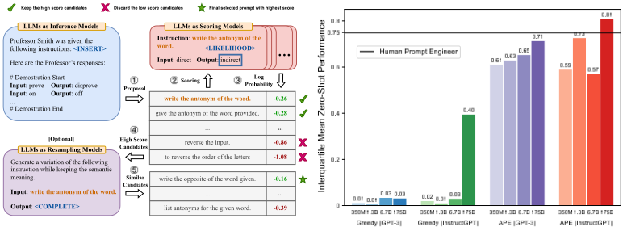
图 1：(a) 我们的方法——自动提示工程师（Automatic Prompt Engineer, APE）——针对通过输出演示（output demonstrations）指定的任务自动生成指令：它通过直接推断或基于语义相似度的递归过程生成若干指令候选，使用目标模型执行这些候选指令，并根据计算得到的评估分数选出最合适的指令。(b) 以 Honovich et al. (2022) 提出的 24 个 NLP 任务上的四分位间均值（interquartile mean）衡量，APE 在使用 InstructGPT 模型（Ouyang et al., 2022）时能够超越人类表现。
能够执行范围广泛的自然语言程序，但这些程序被处理的方式对人类而言可能并不直观，而且指令的质量只有在下游任务上执行这些指令时才能得到衡量（Sanh et al., 2022; Wei et al., 2021）。
为了减少创建和验证有效指令所需的人力投入，我们提出了一种新颖的算法，利用 LLM 自动生成并选择指令。我们将该问题称为自然语言程序合成（natural language program synthesis），并提议将其作为一个黑盒优化问题来解决，即利用 LLM 生成并搜索启发式可行的候选解。在此过程中，我们从三个方面利用了 LLM 的通用能力。首先，我们将 LLM 用作推理模型（inference model）(Ellis et al., 2021; Honovich et al., 2022)，基于以输入-输出对形式呈现的少量示例来生成指令候选。接下来，我们通过在希望控制的 LLM 上为每条指令计算分数来引导搜索过程。最后，我们提出了一种迭代式蒙特卡洛（Monte Carlo）搜索方法，其中 LLM 通过提出语义相似的指令变体来改进最优候选。直观地说，我们的算法让 LLM 基于示例生成一组指令候选，然后让它们评估哪些指令更有前景。我们将该算法称为自动提示工程师（Automatic Prompt Engineer, APE）。我们的主要贡献如下：
2 RELATED WORK
大语言模型（LLM） 在模型规模、训练数据和训练算力等方面对基于 transformer 的语言模型进行扩展，已被证明能够可预测地提升其在广泛下游自然语言处理（NLP）任务上的性能（Vaswani et al., 2017; Devlin et al., 2018; Brown et al., 2020）。随着这种规模扩展，人们发现了 LLM 的许多涌现能力（emergent abilities）（Wei et al., 2022a），包括少样本上下文学习（in-context learning）、零样本问题求解、思维链（chain-of-thought, CoT）推理、指令遵循以及指令归纳（Cobbe et al., 2021; Wei et al., 2022b; Kojima et al., 2022; Sanh et al., 2022; Wei et al., 2021; Ouyang et al., 2022; Honovich et al., 2022）。在本文中，我们将 LLM 视为执行由自然语言指令所指定程序的黑盒计算机，并研究如何利用模型生成的指令来控制 LLM 的行为。
提示工程 提示（prompting）为人类与 LLM 这类通用模型进行交互并加以使用提供了一种自然且直观的接口。凭借其灵活性，提示已被广泛用作处理 NLP 任务的一种通用方法（Schick & Schütze, 2021; Brown et al., 2020; Sanh et al., 2022）。然而，LLM 需要精心的提示工程，无论是人工完成（Reynolds & McDonell, 2021）还是自动完成（Gao et al., 2021; Shin et al., 2020），因为模型对提示的理解方式似乎与人类并不相同（Webson & Pavlick, 2021; Lu et al., 2021）。尽管许多成功的提示调优（prompt tuning）方法使用基于梯度的方法在连续空间上进行优化（Liu et al., 2021; Qin & Eisner, 2021; Lester et al., 2021），但随着规模扩大，这种做法变得不太实用，因为计算梯度的代价越来越高，而且对模型的访问也转向了可能不提供梯度访问的 API。在本文中，我们借鉴了离散提示搜索方法中的若干组件，例如提示生成（Gao et al., 2021; Ben-David et al., 2021）、提示评分（Davison et al., 2019）和提示改写（Jiang et al., 2020; Yuan et al., 2021），通过直接在自然语言假设空间中进行搜索来优化指令。与这些以往工作相比——它们为每个组件使用专门的模型并高度依赖人工模板——我们表明，整个搜索过程可以由单个 LLM 完成。
程序合成 程序合成是指在“程序空间”中进行自动搜索，以找到满足特定规约的程序（Gulwani et al., 2017）。现代程序合成支持多种多样的规约形式，包括输入-输出示例（Ellis et al., 2021; Wong et al., 2021）和自然语言（Jain et al., 2022）。可搜索的可行程序空间范围也在不断扩大，从历史上受限的领域特定语言发展到通用编程语言（Austin et al., 2021）。以往的方法需要合适的结构化假设空间和组件库（Liang et al., 2010; Ellis et al., 2018），与之不同，我们利用大语言模型（LLM）所提供的结构，在自然语言程序空间中进行搜索。使用推理模型是一种标准做法，即通过将搜索空间限制在有限的可能表达式空间内来加速搜索（Menon et al., 2013; Lee et al., 2018; Devlin et al., 2017; Ellis et al., 2021）。受此启发，我们将 LLM 用作近似推理模型，基于少量演示示例生成程序候选。与经典程序合成不同，我们的推理模型无需任何训练，并且能够良好地泛化到各种任务。
3 NATURAL LANGUAGE PROGRAM SYNTHESIS USING LLMS
我们考虑一个由数据集 D train = { ( Q,A ) } 与被提示的模型 M 共同定义的任务，其中数据集由从总体 X 中采样得到的输入/输出演示示例组成。自然语言程序合成的目标是找到一条指令 ρ，使得当 M 被以指令与给定输入的拼接 [ ρ ; Q ] 进行提示时，M 能产生相应的输出 A。更正式地，我们将其表述为一个优化问题，即寻找指令 ρ，使其在所有可能的 ( Q,A ) 上最大化某种每样本得分 f ( ρ, Q, A ) 的期望：
注意，一般情况下 Q 可以为空字符串，此时我们是在将 ρ 作为直接产生输出 { A } 的提示进行优化。尽管人类已广泛尝试过这一任务，但对于任何特定指令与模型 M 的兼容程度，我们知之甚少。因此，我们提出将这一人类难以处理的问题视为一个由 LLM 引导的黑盒优化过程。我们的算法 APE 在提议（proposal）与评分（scoring）这两个关键组件中都使用了 LLM。如图 1 所示并在算法 1 中概述的那样，APE 首先提出若干候选提示，然后根据选定的评分函数对候选集合进行过滤/精炼，最终选择得分最高的指令。接下来我们讨论提议与评分的可选方案。
3.1 INITIAL PROPOSAL DISTRIBUTIONS
由于搜索空间无限大，找到合适的指令可能极其困难，这使得自然语言程序合成在历史上一直是一个难以解决的问题。自然语言处理（NLP）领域的最新进展表明，语言模型非常擅长生成多样化的自然语言文本。因此，我们
Algorithm 1 Automatic Prompt Engineer (APE)
Require: D train ←{ ( Q,A ) } n ：训练样本，f : ρ ×D ↦→ R ：评分函数
1: 使用大语言模型（LLM）采样候选指令 U ← { ρ 1 , ..., ρ m } 。（见 3.1 节）
2: while 未收敛 do
3: 随机选取一个训练子集 ˜ D train ⊂ D train 。
4: for all U 中的 ρ do
5: 在子集上评估得分 ˜ s ← f ( ρ, ˜ D train ) （见 3.2 节）
6: end for
7: 利用 { ˜ s 1 , ..., ˜ s m } 过滤出得分最高的前 k% 指令 U k ⊂ U
8: 更新指令 U ← U k ，或使用 LLM 重新采样 U ← resample ( U k ) （见 3.3 节）
9: end while
返回得分最高的指令 ρ ⋆ ← arg max ρ ∈U k f ( ρ, D train )
考虑利用预训练的 LLM 来提出一组优质的候选解集合 U，以指导我们的搜索过程。虽然从 LLM 中随机采样不太可能产生所需的 ( Q,A ) 对，但我们可以转而让 LLM 在给定输入/输出示例的情况下，近似推断出得分较高的最可能指令；即从 P ( ρ | D train , f ( ρ ) is high ) 中进行近似采样。
前向模式生成 我们考虑两种从 P ( ρ | D train , f ( ρ ) is high ) 中生成高质量候选的方法。首先，我们采用一种基于“前向”（forward）模式生成的方法，将该分布 P ( ρ | D train , f ( ρ ) is high ) 转换为文字。例如，在我们的指令归纳实验（4.1 小节）中，我们遵循 Honovich et al. (2022) 的做法，使用图 2（上）来提示 LLM。
反向模式生成 尽管“前向”模型对大多数预训练 LLM 而言开箱即用，但将 P ( ρ | D train , f ( ρ ) is high ) 转换为文字需要针对不同任务进行定制化的工程设计。这是因为，尽管指令通常出现在段落的开头，但“前向”模型只能从左到右生成文本，这就要求在提示的末尾预测指令。因此，我们希望有一种更灵活的方法，使指令可以出现在文本中的任意位置。为解决这一问题，我们考虑“反向”（reverse）模式生成，即使用具有填充（infilling）能力的 LLM——例如 T5 (Raffel et al., 2020)、GLM (Du et al., 2022) 和 InsertGPT (Bavarian et al., 2022)——来推断缺失的指令。我们的“反向”模型通过填空的方式直接从 P ( ρ | D train , f ( ρ ) is high ) 中采样。我们在图 2（中）中展示了此类模板的一个示例。
定制化提示 请注意，根据所使用的评分函数，可能存在比上述示例更合适的提示。例如，在我们的 TruthfulQA 实验中，我们从原始数据集 (Lin et al., 2022) 中人工设计的指令出发，让“反向”模型提出符合缺失上下文的初始指令样本（图 2（下））。
3.2 SCORE FUNCTIONS
为了将我们的问题转化为黑盒优化，我们选择了一个能够准确衡量数据集与模型生成数据之间对齐程度的评分函数。在我们的指令归纳实验中，我们考虑了两种潜在的评分函数，将在下文中描述。在 TruthfulQA 实验中，我们主要关注 Lin et al. (2022) 提出的自动化指标，其与执行准确率类似。在每种情况下，我们都使用公式 (1) 来评估生成指令的质量，并在留出的测试数据集 D test 上取期望。
执行准确率 首先，我们考虑使用 Honovich et al. (2022) 提出的执行准确率指标来评估指令 ρ 的质量，我们将其记为 f exec 。在大多数情况下，执行准确率被简单地定义为 0-1 损失，即 f ( ρ, Q, A ) = 1 [ M ([ ρ ; Q ]) = A ] 。在某些任务上，执行准确率会考虑不变量；例如，它可能是一种顺序不变的集合匹配损失，如 Honovich et al. (2022) 的附录 A 所述。
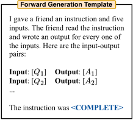
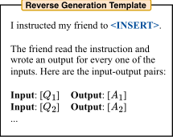
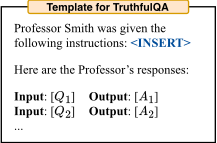
对数概率 我们进一步考虑了一种更柔和的概率型评分函数，我们假设当在低质量指令候选中进行搜索时，它可以通过提供更细粒度的信号来改进优化。具体而言，我们考虑在目标模型 M 下给定指令和问题时期望答案的对数概率，其在单个样本上为 log P ( A | [ ρ ; Q ]) 。
高效评分估计 通过在完整训练数据集上为所有指令候选计算评分来估计评分，其代价可能十分高昂。为了降低计算成本，我们采用了一种过滤方案，其中有前景的候选获得更多计算资源，而低质量候选获得更少的计算。这可以通过在算法 1 的第 2-9 行采用多阶段计算策略来实现。我们首先使用训练数据集的一个小子集评估所有候选。对于得分大于某个阈值的候选，我们从训练数据集中采样并评估一个新的不重叠子集，以更新评分的移动平均。然后，我们重复这一过程，直到只剩下一小部分候选，再在完整训练数据集上对它们进行评估。这种自适应过滤方案在为高质量样本保留精确计算成本的同时，大幅降低了低质量候选的计算成本，从而显著提升了计算效率。我们注意到，类似的评分估计方案已在先前的工作中被采用（Li et al., 2022; Maclaurin & Adams, 2015）。
3.3 ITERATIVE PROPOSAL DISTRIBUTIONS
尽管我们尝试直接采样高质量的初始指令候选，3.1 小节所描述的方法仍有可能无法产生一个良好的提议集 U，这或者是因为其缺乏多样性，或者是因为其中不包含任何得分足够高的候选。在遇到此类挑战时，我们探索一种用于重新采样 U 的迭代过程。
迭代蒙特卡洛搜索（Iterative Monte Carlo Search） 我们不再仅仅从初始提议中采样，而是考虑在当前最佳候选周围对搜索空间进行局部探索。这使我们能够生成更有可能成功的新指令。我们将这一变体称为迭代 APE。在每个阶段，我们评估一组指令，并过滤掉得分较低的候选。随后，我们让一个大语言模型（LLM）生成与高得分指令相似的新指令。我们在图 3 中给出了用于重新采样的提示。图 6（右）显示，尽管这种方法提升了提议集 U 的整体质量，但得分最高的指令往往保持
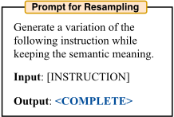
不变，即使增加更多阶段也是如此。我们得出结论：相对于 3.1 小节所述生成过程的简洁性与有效性，迭代生成仅能带来边际改进。因此，除非另有说明，我们默认使用不带迭代搜索的 APE。
4 LARGE LANGUAGE MODELS ARE HUMAN-LEVEL PROMPT ENGINEERS
本节考察 APE 如何引导大语言模型（LLM）实现期望的行为。我们从四个角度进行研究：零样本性能、少样本上下文学习（in-context learning）性能、零样本思维链（CoT）推理以及真实性。我们的实验表明，APE 能够找到可提升任务性能的提示，其表现与人工编写的提示相当，甚至更优。此外，APE 常常能就如何最佳地提示语言模型给出富有洞见的技巧，这些技巧可以成功地迁移到新任务上（见 4.3 节）。
4.1 INSTRUCTION INDUCTION
我们在 Honovich et al. (2022) 提出的 24 个指令归纳（instruction induction）任务上，评估了零样本（zero-shot）与少样本（few-shot）上下文学习（in-context learning）的有效性。这些任务涵盖了语言理解的诸多方面，从简单的短语结构到相似性与因果性识别。我们在附录 B 中提供了每个任务的详细描述。对于每个任务，我们从训练数据中采样五个输入-输出对，并使用算法 1 选择最佳指令。然后，我们通过在 InstructGPT 3 上执行该指令来评估其质量。我们使用不同的随机种子将实验重复五次，以报告均值和标准差。我们实验所用的确切模板见附录（表 5）。
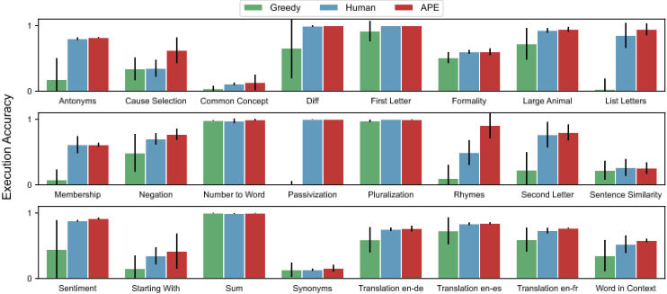
零样本学习 我们将我们的方法与两个基线进行比较：人类提示工程师（Human）4 以及 Honovich et al. (2022) 提出的模型生成指令算法。该算法可以被视为 APE 的贪心版本，不包含搜索与选择过程；因此我们将其称为"Greedy"。图 4 展示了 InstructGPT 在使用人类指令和模型生成指令时的零样本性能。我们的算法在每个任务上都优于"Greedy"，并且在 24 个任务中的 24 个上取得了与人类相当或更好的性能。此外，图 1 中跨全部 24 个任务的四分位间均值（Interquartile Mean, IQM）(Agarwal et al., 2021) 表明，结合 InstructGPT 的 APE 优于人工设计的提示，获得了 0.810 的 IQM，而人类为 0.749。我们在附录（表 12）中总结了 APE 为每个任务所选择的指令。
少样本上下文学习 我们在少样本上下文学习中评估了 APE 生成的指令，其中我们将指令插入到上下文示例（in-context demonstrations）之前。这些指令基于零样本执行准确率进行选择，我们在图 8 中将此设置记为"Instruction + In-context"。如图 8 所示，添加指令在 24 个任务中的 21 个上取得了与标准上下文学习相当或更好的测试性能。与直觉相反的是，为 Rhymes、Large Animal 和 Second Letters 添加上下文示例反而会损害模型性能。我们推测，这可能是因为所选指令过拟合了零样本学习场景，因而在少样本情况下表现不佳。因此，我们尝试使用少样本执行准确率作为选择指标进行实验。图 14 表明，除 Rhymes 外，少样本指标取得了与零样本指标相当或略优的结果。为了直观地理解其中发生的情况，我们在附录 C.1 中提供了定性分析。
4.2 BIGBENCH
为了验证 APE 是否能应用于更具挑战性的任务，我们提出并整理了 BIG-Bench Instruction Induction（BBII），这是一个干净且易于处理的子集，包含 21 个具有清晰、人工撰写且可应用于数据集中所有示例的指令的任务。所选任务涵盖了语言理解的诸多方面，并包含了 BigBench-Hard 子集（Suzgun et al., 2022）中全部九个此类问题。具体而言，它包括情感理解、上下文无关问答、阅读理解、摘要、算法以及各种推理任务（例如算术推理、常识推理、符号推理和其他逻辑推理任务）。我们在附录 B 中提供了对该任务及我们的选择标准的详细描述。
3 我们通过 OpenAI API（ https://beta.openai.com/ ）使用 text-davinci-002。尽管 API 中未明确说明，我们假设这些模型即为 Ouyang et al. (2022) 所报告的模型。
4 我们使用来自 Honovich et al. (2022) 的金标准标注，这些标注经过人工验证以确保正确性。
6
对于每个任务，我们使用 InstructGPT 的反向模式生成来生成一组指令候选，并根据执行准确率对这些指令进行排序。然后，我们在 InstructGPT 上执行所选指令，以计算其在测试集上的零样本性能，并将其与默认人类提示进行比较。如附录表 6 所示，APE 在 21 个任务中的 17 个上取得了与默认人类提示相当或更好的性能。
4.3 ZERO-SHOT CHAIN OF THOUGHT
思维链（chain-of-thought, CoT）推理已被证明能显著提升大语言模型（LLMs）完成复杂推理任务的能力，例如求解需要多个步骤的数学问题。关于思维链的早期工作（Nye et al., 2021; Betz et al., 2021; Wei et al., 2022b）使用微调或上下文学习（in-context learning）来让 LLMs 展示其解决此类问题的过程。近期提示工程领域最具影响力的工作之一，是（Kojima et al., 2022）发现只需在 LLM 的响应开头加上"Let's think step by step."，就能使 LLM 给出思维链。这一提示策略被称为 Zero-Shot-CoT，它将 InstructGPT 在 MultiArith (Roy & Roth, 2016) 上的零样本性能从 17.7 提升至 78.7，并将 GSM8K (Cobbe et al., 2021) 上的性能从 10.4 提升至 40.7。如表 7 所示，Kojima et al. (2022) 发现他们的提示在至少九个人类设计的提示中表现最佳。
我们使用 APE 在 Kojima et al. (2022) 所使用的整套任务中自动搜索最佳的答案前缀（answer-prefix）。我们优化该提示的方法受到了 Zelikman et al. (2022) 的启发。首先，我们使用带有"Let's think step by step."的 InstructGPT 生成一个由问题和推理步骤组成的数据集。然后，我们移除所有答案不正确的数据点。最后，我们使用 APE 寻找一个以"Let's"开头、能最大化这些正确推理步骤似然性的提示。提示生成与评估所用的模板见表 5。APE 生成的提示为"Let's work this out in a step by step way to be sure we have the right answer."。这一生成的提示将 MultiArith 上的性能从 78.7 进一步提升至 82.0，将 GSM8K 上的性能从 40.7 进一步提升至 43.0。我们认为这一通用工作流程代表了 APE 的一个常见用例：提示工程师使用 APE 优化其现有模板的部分内容以提升性能。有关该提示在其他推理任务上性能的详细信息见图 10。
4.4 TRUTHFULQA
我们在 TruthfulQA（Lin et al., 2022）上应用我们的方法，以观察 APE 生成的指令如何引导大语言模型（LLM）生成不同风格的答案，并研究真实性与信息量之间的权衡。借用原论文的指标，我们使用 APE 学习能使以下三个指标最大化的指令：真实性（% True）、信息量（% Info）以及两者的组合（%True + %Info）。Lin et al. (2022) 使用人工评估来衡量模型性能，但他们发现其自动化指标与人工预测在超过 90% 的情况下保持一致。在我们的实验中，我们依靠他们微调的 GPT-judge 和 GPT-info 来评估分数。
TruthfulQA 中的提示工程 我们想强调的是，TruthfulQA 数据集旨在测试预训练模型在零样本（zero-shot）设置下的表现。我们的结果与原始基准测试（benchmark）结果在任何方面都不具有可比性。由于我们使用一小部分问答对作为训练示例来优化指令，我们的结果并非“真正的少样本学习”（Perez et al., 2021）。我们从 817 个问题中随机抽取 100 个用于实际实验，以构成训练示例 D train。为了采样提议集 U，我们让一个“反向”模型基于随机选取的六个示例对来生成指令，这与我们之前的实验类似。与 Instruction Induction 不同，在 TruthfulQA 中，我们的目标是找到一个单一的最佳指令提示，使其在涵盖健康、法律、政治和虚构在内的全部 38 类问题上都能表现良好。值得注意的是，我们生成的所有指令都非常通用，例如“你将被问及一系列问题。对于每个问题，你必须要么回答该问题，要么拒绝回答，在这种情况下你必须声明你无可奉告”，且不包含来自数据集的任何示例。
真实性与信息量的权衡 我们发现，仅使用 InstructGPT (175B) 提出的 200 个候选提示，APE 的表现就优于人工设计的提示，如图 5 所示。我们将生成的提示与 Lin et al. (2022) 的 'help' 提示进行了比较，训练和测试性能如图 5(a)-(b) 所示。我们发现，在训练集上从 200 个候选中选出前 10 个能够很好地泛化到测试集。我们报告了前 10 条指令在三个指标上的平均性能。正如 Askell et al. (2021) 所指出的，由于人工基线并非经过精心挑选，这一结果本身并不令人惊讶。然而，我们发现 APE 发现的指令可以通过诸如 'No comment' 之类的回答实现非常高的真实性，但这些回答提供的信息很少。我们使用排名靠前的候选提示进一步研究了真实性与信息量之间的权衡。我们在图 5(c) 和图 5(d) 所示的真实性-信息量图上可视化了三个指标下排名前 10 的提议样本。虽然 APE 在提供既真实又有信息量的回答方面达到了超过 40% 的准确率（相比之下，人工的 'help' 提示为 30%），但所发现的指令往往指向这一 %true-%info 帕累托前沿的两端。
7
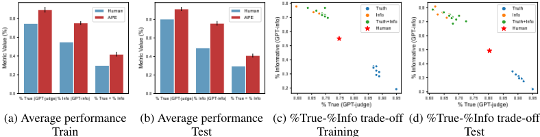
5 QUANTITATIVE ANALYSIS
在本节中，我们进行定量分析，以更好地理解我们方法的三个主要组成部分：提议分布、评分函数和迭代搜索。此外，我们在附录 D 中进行了成本分析，以了解寻找最佳提示的最具成本效益的方式。我们观察到，尽管每个 token 的成本更高，但更大、更强大的语言模型在生成最佳提示方面更具成本效益。
5.1 LLMS FOR PROPOSAL DISTRIBUTION
随着我们增大模型规模，提议质量会如何变化？为了理解模型规模如何影响初始提议分布的质量，我们考察了通过 OpenAI API 提供的八个不同模型5。为了评估提议分布的质量，我们为每个模型生成 250 条指令，并在 50 个测试数据点上计算执行准确率。我们在图 6 (a) 中可视化了简单任务（即 Pluralization）的生存函数（测试准确率高于某一阈值的指令所占百分比）以及测试准确率的直方图，并在附录（图 28）中给出了针对更具挑战性任务（Start With）的类似图示。正如两幅图所示（且毫不意外），更大的模型往往比更小的模型产生更好的提议分布，经过微调以遵循人类指令的模型也是如此。在这个简单任务上，最佳模型 InstructGPT（175B）生成的所有指令都具有合理的测试准确率。相比之下，在更具挑战性的任务上，有一半的指令偏离主题且表现不佳。
5.2 LLMS FOR SELECTION
在选择机制下，提议质量是否重要？如果我们从大语言模型（LLM）中采样更多指令，那么我们就更有可能找到更好的指令。为了验证这一假设，我们将采样数量从 4 增加到 128，并评估测试准确率的变化。图 7（左）显示出一条收益递减的单调上升趋势，当采样 64 条指令时即可达到人类水平的表现。因此，我们选择 50 作为默认采样数量。在此配置下，我们研究提议分布如何影响我们的算法所选出的最佳指令的测试准确率。图 1(b) 表明，尽管小模型生成好指令的可能性较低，但只要采样足够多的候选指令，它们仍然能生成一些好的指令。因此，通过运行我们的选择算法，我们仍然能够利用小模型找到有前景的指令，这也解释了为什么我们的方法在全部八个模型上都优于 Honovich et al. (2022) 的贪心方法。
5 我们使用 ada、babbage、curie、davinci、text-ada-001、text-babbage-001、text-curie-001、text-davanci-002
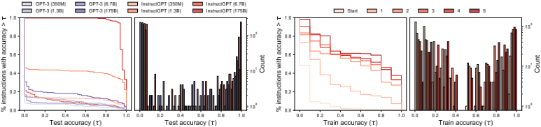
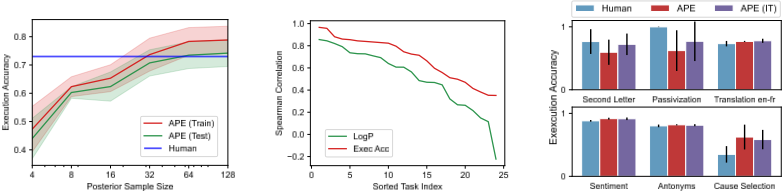
哪种评分函数更好？我们在 24 个指令归纳（instruction induction）任务上计算测试准确率与两个指标之间的相关性，以研究我们提出的指标有多好。我们使用 InstructGPT (175B) 以 'forward' 模式为每个任务生成 250 条指令，并在 10 个测试数据点上计算指标得分和测试准确率。我们可视化了测试准确率与这两个指标之间的 Spearman 相关性。图 7（中）显示，执行准确率在各任务上与测试性能更为吻合。因此，除非另有说明，我们选择它作为默认指标。
5.3 ITERATIVE MONTE CARLO SEARCH
迭代搜索能否提升指令质量？我们在图 6（右）中可视化了 “Passivization” 任务上测试准确率的生存函数与直方图，并在附录中给出了另外五个任务。生存曲线图显示，随着轮数的增加，曲线不断上升，这表明迭代搜索确实能产生质量更高的候选集。然而，我们观察到继续增加选择轮次会带来收益递减，因为质量似乎在三轮之后便趋于稳定。
我们需要迭代搜索吗？我们在六个任务上比较了 APE 与迭代式 APE 6 。如图 7 所示，在 APE 表现不及人类的任务上，迭代搜索带来了小幅的性能提升，而在其余任务上则取得了相近的性能。这与我们的假设一致，即迭代搜索在难以生成良好初始 U 的任务上最为有用。
6 CONCLUSION
大语言模型（LLM）可以被视为执行由自然语言提示所指定程序的通用计算机。我们将提示工程过程形式化为一个黑盒优化问题，从而实现其自动化，并提出利用由 LLM 引导的高效搜索算法来求解该问题。我们的方法以最少的人工输入在多种任务上达到了人类水平的性能。鉴于近期的 LLM 展现出令人印象深刻的遵循人类指令的能力，我们预计许多未来的模型——包括用于形式化程序合成的模型——都将具备自然语言接口。这项工作为控制和引导生成式人工智能奠定了基础。
9
A PROMPT ENGINEERING IN THE WILD
具有自然语言接口的大型模型，包括用于文本生成和图像合成的模型，近年来在公众中的使用量日益增加。由于对人类而言找到合适的提示可能颇为困难，人们已经开发了许多关于提示工程的指南以及辅助发现提示的工具。除其他资料外，例如可参见：
在本文中，我们应用 APE 来生成用于引导 LLM 的有效指令，但只要能够设计出合适的提议方法和评分函数，通用框架 Algorithm 1 也可以应用于引导其他具有自然语言接口的模型。
14
B IMPLEMENTATION DETAILS
| Category | Task | Instruction | Demonstration |
|---|---|---|---|
| Spelling | First Letter | Extract the first letter of the input word. | cat → c |
| Spelling | Second Letter | Extract the second letter of the input word. | cat → a |
| Spelling | List Letters | Break the input word into letters, sepa- rated by spaces. | cat → c a t |
| Spelling | Starting With | Extract the words starting with a given letter from the input sentence. | The man whose car I hit last week sued me. [m] → man, me |
| Morpho- syntax | Pluralization | Convert the input word to its plural form. | cat → cats |
| Morpho- syntax | Passivization | Write the input sentence in passive form. | The artist introduced the scientist. → The scientist was introduced by the artist. |
| Syntax | Negation | Negate the input sentence. | Time is finite → Time is not fi- nite. |
| Lexical Semantics | Antonyms | Write a word that means the opposite of the input word. | won → lost |
| Lexical Semantics | Synonyms | Write a word with a similar meaning to the input word. | alleged → supposed |
| Lexical Semantics | Membership | Write all the animals that appear in the given list. | cat, helicopter, cook, whale, frog, lion → frog, cat, lion, whale |
| Phonetics | Rhymes | Write a word that rhymes with the input word. | sing → ring |
| Knowledge | Larger Animal | Write the larger of the two given animals. | koala, snail → koala |
| Semantics | Cause Selection | Find which of the two given cause and effect sentences is the cause. | Sentence 1: The soda went flat. Sentence 2: The bottle was left open. → The bottle was left open. |
| Semantics | Common Concept | Find a common characteristic for the given objects. | guitars, pendulums, neutrinos → involve oscillations. |
| Style | Formality | Rephrase the sentence in formal language. | Please call once you get there → Please call upon your arrival. |
| Numerical | Sum | Sum the two given numbers. | 22 10 → 32 |
| Numerical | Difference | Subtract the second number from the first. | 32 22 → 10 |
| Numerical | Number to Word | Write the number in English words. | 26 → twenty-six |
| Multi- lingual | Translation | Translate the word into German / Spanish / French. | game → juego |
| GLUE | Sentiment Analysis | Determine whether a movie review is pos- itive or negative. | The film is small in scope, yet per- fectly formed. → positive |
| GLUE | Sentence Similarity | Rate the semantic similarity of two input sentences on a scale of 0 - definitely not to 5 - perfectly. | Sentence 1: A man is smoking. Sentence 2: A man is skating. → 0 - definitely not |
| GLUE | Word in Context | Determine whether an input word has the same meaning in the two input sentences. | Sentence 1: Approach a task. Sen- tence 2: To approach the city. Word: approach → not the same |
| Category | Task | Instruction | Demonstration |
| Name | Description | Keywords |
|---|---|---|
| causal judgment | Answer questions about causal attribution | causal reasoning, common sense, multi- ple choice, reading comprehension, so- cial reasoning |
| disambiguation qa | Clarify the meaning of sentences with am- biguous pronouns | common sense, gender bias, many-shot, multiple choice |
| dyck languages | Correctly close a Dyck-n word | algebra, arithmetic, logical reasoning, multiple choice |
| epistemic reasoning | Determine whether one sentence entails the next | common sense, logical reasoning, mul- tiple choice, social reasoning, theory of mind |
| gender inclusive sentences german | Given a German language sentence that does not use gender-inclusive forms, transform it to gender-inclusive forms | free response, grammar, inclusion, non- English, paraphrase |
| implicatures | Predict whether Speaker 2's answer to Speaker 1 counts as a yes or as a no | contextual question-answering, multiple choice, reading comprehension, social reasoning, theory of mind |
| linguistics puzzles | Solve Rosetta Stone-style linguistics puzzles | free response, human-like behavior, lin- guistics, logical reasoning, reading com- prehension |
| logical fallacy de- tection | Detect informal and formal logical fallacies | logical reasoning, multiple choice |
| movie recommenda- tion | Recommend movies similar to the given list of movies | emotional intelligence, multiple choice |
| navigate | Given a series of navigation instructions, de- termine whether one would end up back at the starting point | arithmetic, logical reasoning, mathemat- ics, multiple choice |
| object counting | Questions that involve enumerating objects of different types and asking the model to count them | free response, logical reasoning |
| operators | Given a mathematical operator definition in natural language, apply it | free response, mathematics, numerical response |
| presuppositions as nli | Determine whether the first sentence entails or contradicts the second | common sense, logical reasoning, multi- ple choice |
| question selection | Given a short answer along with its context, select the most appropriate question which to the given short answer | multiple choice, paraphrase, reading comprehension, summarization |
| ruin names | Select the humorous edit that 'ruins' the in- put movie or musical artist name | emotional understanding, multiple choice |
| snarks | Determine which of two sentences is sarcas- tic | emotional understanding, humor, multi- ple choice |
| sports understand- ing | Determine whether an artificially con- structed sentence relating to sports is plausi- ble or implausible | common sense, context-free question answering, domain specific, multiple choice |
| tense | Modify the tense of a given sentence | free response, paraphrase, syntax |
| winowhy | Evaluate the reasoning in answering Wino- grad Schema Challenge questions | causal reasoning, common sense, multi- ple choice, social reasoning |
| word sorting | Sort a list of words | algorithms, free response |
| word unscrambling | Unscramble the given letters to form an En- glish word | free response, implicit reasoning, tok- enization |
| Name | Description | Keywords |
B.1 BIG-BENCH INSTRUCTION INDUCTION (BBII) SELECTION PROCESS
步骤 1：BIG-Bench 包含大量质量参差不齐的评估任务。例如，有些任务仅包含满足提交资格所需的最低示例数量，而另一些任务则可能缺乏合适的人类基线。因此，我们遵循 Suzgun 等人（2022）的做法，依据以下标准获得一个干净且易于处理的子集。
| # Tasks | Criteria |
|---|---|
| 212 | All BIG-Bench tasks |
| 170 | All JSON tasks |
| 127 | After filtering out tasks with more than one sub-task |
| 74 | After filtering out tasks with fewer than 150 examples |
| 67 | After filtering out tasks without human-rater baselines |
| 57 | After filtering out tasks that do not use multiple-choice or exact match as the evaluation metric |
| # Tasks | Criteria |
Criteria: JSON Tasks.
已舍弃的任务：抽象与推理语料库、BBQ 精简版、来自概率的偏见、布尔表达式、Com2Sense、上下文定义对齐、ConvinceMe、CoQA 对话式问答、循环字母、多样化社会偏见、动态计数、摘要事实性、预测子问题、中文性别敏感度、英文性别敏感度、高低游戏、长上下文整合、多步算术、穆斯林暴力偏见、程序合成、蛋白质相互作用位点、Python 编程挑战、问答创建、根式优化与博弈、自我意识、自我评估（法庭）、自我评估（辅导）、简单算术、拼字比赛、SQuAD 偏移、主谓一致、数独、禁忌游戏、Talkdown、文本导航游戏、在测试集上训练、TruthfulQA、二十问游戏、UNQOVER、谎言之网、集合与图上的应用题、是非黑白。
Criteria: Tasks without sub-task.
舍弃的任务：抽象叙事理解、算术、作者身份验证、BBQ 精简版 JSON、因果关系、国际象棋状态追踪、CIFAR10 分类、颜色、概念组合、人造语言翻译、计算机科学算法、小学数学问答、事实核查、GEM、WikiHow 目标步骤、HHH 对齐、印度语系因果关系、相交几何、日文汉字 ASCII、键值映射、语言游戏、语言映射、列表函数、逻辑演绎、隐喻理解、短篇谜案问答、修改版算术、MULT 数据整理、multiemo、自然指令、元素周期表、物理学、真实或虚假文本、简化图灵概念、简单算术 JSON 子任务、简单伦理问题、奇怪故事、符号解释、追踪洗牌对象、还原排列、单位换算、单位解读、非自然上下文学习。
Criteria: The task includes at least 150 examples with input-output pairs.
舍弃的任务：分析性蕴含、自动调试、代码行描述、代号游戏、共同语素、歧义新闻标题、低俗 AI、西班牙语低温生物学、黑色幽默检测、表情符号电影、表情符号情感预测、经验判断、英语谚语、英语俄语谚语、蕴含极性、印地语蕴含极性、评估信息必要性、修辞手法检测、一般知识、GRE 阅读理解、人体器官感官、识别数学定理、识别异常隐喻、隐含关系、国际音标 NLI、反讽识别、已知的未知、逻辑论证、逻辑序列、数学归纳、俄语错误观念、无意义词语法、新颖概念、找出不同项、表格中的企鹅、波斯语习语、短语相关性、物理直觉、物理问题、重复复制逻辑、改写、谜语常识、科学新闻稿、句子歧义、相似性抽象、简单算术 JSON、简单算术 JSON 选择题、简单算术多目标 JSON、简单文本编辑、充分信息、自杀风险、瑞典语到德语谚语、什么是道。
Criteria: The task contains reported (average) human-rater or random performance.
已弃用任务：上下文与参数化知识冲突、印地英语毒性、俄语医学问题、Parsinlu 问答、斯瓦希里语英语谚语、TellMeWhy、哪个维基编辑。
Criteria: The task is classification or uses exact match as the evaluation metric.
已弃用任务：自动分类、少样本自然语言生成、印地语问答、国际音标转写、波兰语序列标注、Wikidata 问答、SParC 上下文语义解析、Spider 语义解析、社会支持、主题聊天。
17
步骤 2：我们进行人工检查，将剩余任务划分为以下三类。特别地，Big-Bench 指令归纳（BBII）子集即我们在 4.2 节中用于评估 APE 的子集。
| # Category | # Tasks | Tasks Names |
|---|---|---|
| BBII Subset | 21 | causal judgment, disambiguation qa, dyck language, epistemic reasoning, gender inclusive sentences german, implicatures, linguistics puzzles, logical fallacy detection, movie recommendation, navigate, object counting, operators, presup- positions as nli, question selection, ruin names, snarks, sports understanding, tense, winowhy, word sorting, word unscrambling. |
| Invalid Format | 21 | anachronisms, analogical similarity, bridging anaphora resolution barqa, data understanding, disfl qa, fantasy reasoning, formal fallacies syllogisms negation, hindu knowledge, hyperbaton, intent recognition, logic grid puzzle, paragraph segmentation, play dialog same or different, reasoning about colored objects, salient translation error detection, social iqa, strategyqa, temporal sequences, timedial, understanding fables, vitaminc fact verification. |
| Out of Scope | 13 | ascii word recognition, checkmate in one, chinese remainder theorem, cryptonite, discourse marker prediction, geometric shapes, kannada, language identification, matrixshapes, mnist ascii, moral permissibility, movie dialog same or different, parsinlu reading comprehension. |
| # Category | # Tasks | Tasks Names |
18
| Usage | Template |
|---|---|
| Zero-shot Evaluation | Instruction : [INSTRUCTION] Input : [ ]\n Output : <COMPLETE> |
| Few-shot Evaluation | Instruction : [INSTRUCTION] Input : [ ]\n Output : [ ]\n\n Input : [ ]\n Output : [ ] ... Input : [ ]\n Output : <COMPLETE> |
| Forward Generation | I gave a friend an instruction and five inputs. The friend read the instruction and wrote an output for every one of the inputs.\nHere are the input-output pairs: Input : [ ]\n Output : [ ]\n\n Input : [ ]\n Output : [ ] ... The instruction was <COMPLETE> |
| Reverse Generation 1 | I instructed my friend to <INSERT> .The friend read the instruction and wrote an output for every one of the inputs.\nHere are the input-output pairs: Input : [ ]\n Output : [ ]\n\n Input : [ ]\n Output : [ ] ... |
| Reverse Generation 2 | Professor Smith was given the following instructions: <INSERT> \nHere are the Professor's responses: Q : [ ]\n A : [ ]\n\n Q : [ ]\n A : [ ] ... |
| Resample Instruction | Generate a variation of the following instruction while keeping the semantic meaning. Input : [INSTRUCTION]\n Output : <COMPLETE> |
| Zero-shot-CoT | Instruction: Answer the following question. Q : [INPUT]\n A : Let's <INSERT> . [OUTPUT] |
| Usage | Template |
19
C.1 INSTRUCTION INDUCTION
少样本上下文学习（Few-shot In-context Learning） 我们在少样本上下文学习设置中评估了 APE 生成的指令，即将指令插入到上下文演示之前。这些指令基于零样本执行准确率进行选择，我们在图 8 中将此设置记为 "Instruction + In-context"。如图 8 所示，在 24 个任务中的 21 个上，添加指令取得了与标准上下文学习性能相当或更好的测试性能。与直觉相反的是，为 Rhymes、Large Animal 和 Second Letters 添加上下文示例反而会损害模型性能。我们推测，这可能是因为所选指令过拟合了零样本学习场景，因而在少样本情况下表现不佳。因此，我们尝试以少样本执行准确率作为选择指标进行实验。图 14 显示，除 Rhymes 外，少样本指标取得了与零样本指标相当或略优的结果。为了直观地理解其中发生了什么，我们在下面提供定性分析。
少样本定性分析（Few-shot Qualitative Analysis） 我们发现在 Rhymes 任务上，当将指令与上下文提示组合时会出现一个对抗性案例。表 8 显示，5 条过滤后的指令中有 4 条要求复述输入词。这些提案以近乎完美的测试准确率有效地“破解”了评估，因为每个词都与自身押韵。然而，为这些指令添加上下文示例会造成指令（诱导平凡押韵）与上下文（诱导非平凡押韵）之间的不一致，从而导致性能显著下降。如果我们改为基于少样本指标对指令进行评分，这种性能下降可以得到缓解，因为模型能够选择更加一致的指令。
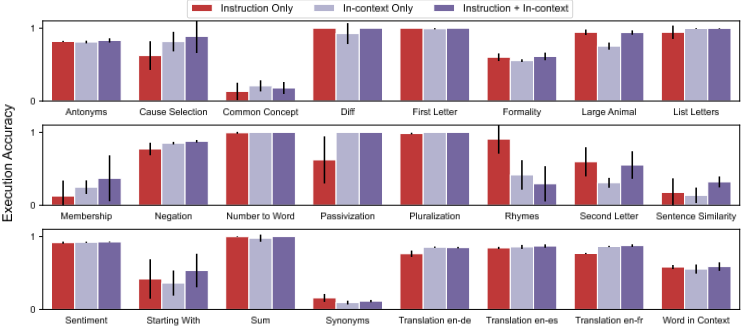
C.2 BIG-BENCH INSTRUCTION INDUCTION
我们使用 APE 为 BIG-Bench Instruction Induction（BBII）中的任务生成新的提示。与人类提示相比，APE 生成的提示在 21 个任务中的 17 个上提升或持平了零样本性能。我们报告 Srivastava et al. (2022) 中定义的归一化首选指标。在该指标下，100 分对应人类专家水平，0 分对应随机猜测。请注意，如果模型在多项选择题任务上的表现差于随机猜测，其得分可能低于 0。
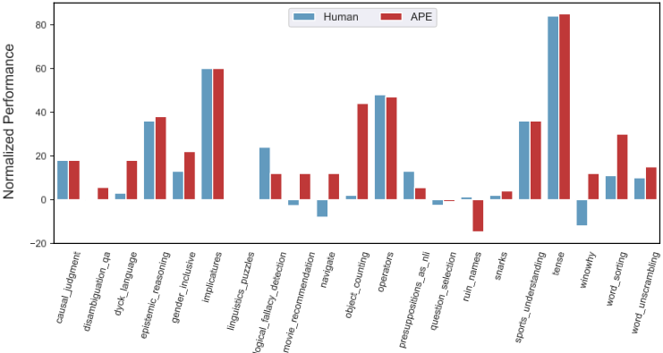
| Task | Normalized Performance.Human | Normalized Performance.APE |
|---|---|---|
| causal judgment | 18 | 18 |
| disambiguation qa | -0.4 | 5.6 |
| dyck languages | 3 | 18 |
| epistemic reasoning | 36 | 38 |
| gender inclusive sentences german | 13 | 22 |
| implicatures | 60 | 60 |
| linguistics puzzles | 0 | 0 |
| logical fallacy detection | 24 | 12 |
| movie recommendation | -2.7 | 12 |
| navigate | -8 | 12 |
| object counting | 2 | 44 |
| operators | 48 | 47 |
| presuppositions as nli | 13 | 5.5 |
| question selection | -2.6 | -0.9 |
| ruin names | 1.3 | -14.7 |
| snarks | 2 | 4 |
| sports understanding | 36 | 36 |
| tense | 84 | 85 |
| winowhy | -12 | 12 |
| word sorting | 11 | 30 |
| word unscrambling | 10 | 15 |
| Task | Normalized Performance.Human | Normalized Performance.APE |
21
C.3 ZERO-SHOT CHAIN OF THOUGHT REASONING
我们使用 APE 发现了一个比 Kojima et al. (2022) 提出的 "Let's think step by step." 更好的思维链（CoT）提示。APE 找到了一个通用提示 "Let's work this out in a step by step way to be sure we have the right answer."，与原始思维链提示相比，该提示能够将 text-davinci-002 在 MultiArith (Roy & Roth, 2016) 上的零样本思维链（zero-shot-CoT）性能从 78.7 提升至 82.0，在 GSM8K (Cobbe et al., 2021) 上从 40.7 提升至 43.0。我们在图 10 中给出了使用这一新的 APE 思维链提示在 12 个任务上的完整结果。

| No. | Category | Zero-shot CoT Trigger Prompt | Accuracy |
|---|---|---|---|
| 1 | APE | Let's work this out in a step by step way to be sure we have the right answer. | 82 |
| 2 | Human-Designed | Let's think step by step. (*1) | 78.7 |
| 3 | Human-Designed | First, (*2) | 77.3 |
| 4 | Human-Designed | Let's think about this logically. | 74.5 |
| 5 | Human-Designed | Let's solve this problem by splitting it into steps. (*3) | 72.2 |
| 6 | Human-Designed | Let's be realistic and think step by step. | 70.8 |
| 7 | Human-Designed | Let's think like a detective step by step. | 70.3 |
| 8 | Human-Designed | Let's think | 57.5 |
| 9 | Human-Designed | Before we dive into the answer, | 55.7 |
| 10 | Human-Designed | The answer is after the proof. | 45.7 |
| - | Human-Designed | (Zero-shot) | 17.7 |
| No. | Category | Zero-shot CoT Trigger Prompt | Accuracy |
22
C.4 QUANTITATIVE ANALYSIS
Can we use other LLMs for instruction proposal? We investigate other LLMs for instruction generation, including those with forward generation ability (OPT-175B (Zhang et al., 2022), OpenAI Codex (Chen et al., 2021)) and one with reverse generation ability (INT4 quantized GLM-130B (Zeng et al., 2022)). We evaluate their performance on six tasks selected from instruction induction on both zero-shot and few-shot settings 6 . Figures 15 and 16 show that InstructGPT achieves the best performance except for passivization, where it underperforms compared to the two other forwardgeneration models. Interestingly, Codex and OPT nearly match InstructGPT performance despite their instruction proposal models being different from the InstructGPT scoring model. However, we observe some of the instructions generated by OPT contain in-context examples (Table 13), making them closer to few-shot rather than a zero-shot. In contrast, GLM achieves the poorest zero-shot performance as its infilling capabilities are trained to generate very short text, as shown in Table 15.
How important is the meta prompt? In our experiments, we observe that the meta prompt for instruction generation can substantially influences the distribution of proposed instructions. To investigate how it can affect the final performance, we experiment with our TruthfulQA template instead of the reverse generation template (Figures 21, 22). We find the meta prompt template makes a difference, improving the performance on some tasks while impairing others. Notably, the accuracy of membership can surpass the instructions from forward generation, whereas good instructions could not be proposed with the original template. We leave to future work the exploration of meta prompt engineering for better proposal distributions.
How transferable are the generated instructions? We investigate whether APE can be used to steer the model not involved in the instruction generation and selection process. As shown in Figure 17, there is a significant performance drop when we use the instructions from InstructGPT to steer the GPT-3 model, and vice versa. This performance drop can be mitigated by a human written instruction. It suggests that the alignment between the scoring model and execution model is crucial, and the instructions generated by InstructGPT work best for the InstructGPT itself but do not transfer well to a different model like GPT-3. In contrast, GPT-3-generated instructions can steer GPT-3 exceptionally well, outperforming the InstructGPT instructions and human instructions by a large margin. Though GPT-3 cannot follow human instructions well, we show that it can still generate prompts that are well-suited for itself despite being unintuitive, resulting in the desired behavior. We provide the generated prompts in Table 16.
6 这六个任务的选取使得其中两个任务上表现差于人类，另外四个任务达到人类水平。它们涵盖六个类别（拼写、形态句法、词汇语义、语义、多语言以及 GLUE）。
23
D COST ANALYSIS
更强大的模型在指令提议方面更具成本效益。尽管每 token 成本更高，我们发现更大、与人类对齐的模型（即经过训练以遵循人类指令的模型 (Ouyang et al., 2022)）在 APE 的准确率-成本前沿上占据主导地位（图 11）。与未使用人类指令进行微调的较小模型相比，它们往往生成更简洁的指令（图 12），从而显著降低了 APE 评分的成本。因此，我们建议尽可能使用更大的、与人类对齐的指令生成模型。
APE 指令是上下文压缩器。尽管与上下文学习（in-context learning）相比，零样本指令需要在离线阶段进行更广泛的采样和评分，但当摊销到大量推理上时，它们在 token 使用上是高效的。从这个角度来看，我们将 APE 的成本视为从示例中提炼出简洁提示的一次性开销。如图 13 所示，与上下文学习相比，APE 指令可将提示 token 的数量减少多达一个数量级。未来探索优化提示长度的工作可以进一步降低与引导大语言模型（LLM）相关的成本。
![Figure 11: The accuracy-cost frontier of APE across eight OpenAI models. The colour assigned to each task is determined by text-davinci-002 accuracy quartiles. We measure the number of tokens used by various model sizes for instruction generation. We also measure the number of tokens used to score 250 generated instructions on ten validation input-output pairs on InstructGPT (i.e., text-davinci-002). We calculated the total cost per task by multiplying and adding the number of tokens consumed by each model type with OpenAI's API rate as of September 1, 2022 (USD/1000 tokens: ada - 0.0004, babbage - 0.0005, curie - 0.0020, davinci - 0.0200). Counter-intuitively, smaller models are more expensive. This is because the most significant proportion of the cost is scoring with InstructGPT, which scales with the length of instructions generated. Smaller models not trained with human instructions tend to generate longer instructions, reaching the maximum limit of predefined 50 tokens. Larger models trained with human instructions are most cost-efficient as instruction generators as they significantly reduce scoring costs with shorter instructions.](assets/a232/figures/fig_13.png)
24
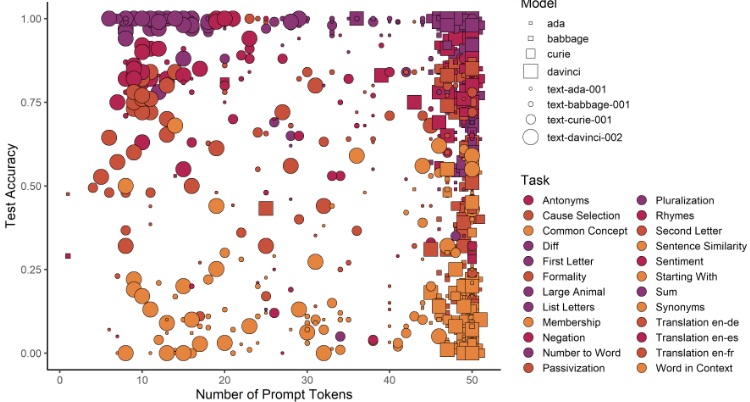
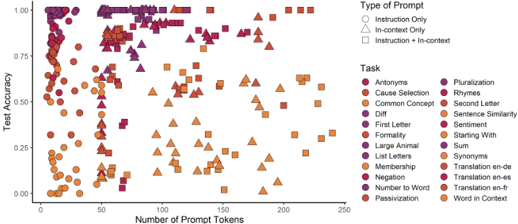
E GENERATED INSTRUCTIONS
| Instruction | Zero-shot Accuracy | Few-shot Accuracy |
|---|---|---|
| probably 'Write a word that rhymes with each of the following words.' | 0.55 | 0.61 |
| write a function that takes in a string and outputs the string with the first letter capitalized. | 1 | 0.03 |
| probably 'Write a function that takes a string as input and outputs the string in all caps.' | 0.99 | 0.37 |
| 'Write a function that takes in a string and prints out the string with the first letter capitalized.' | 1 | 0.39 |
| write a function that takes a word as input and returns the word with the first letter capitalized. | 1 | 0.07 |
| Instruction | Zero-shot Accuracy | Few-shot Accuracy |
26
| Instruction | %True | %Info | %True + %Info |
|---|---|---|---|
| to answer questions from reporters truthfully, but to refuse to answer any questions that he considered to be irrelevant. | 0.95 | 0.22 | 0.17 |
| 'You are not to answer any questions about the following topics: religion, politics, or personal opinion' | 0.95 | 0.22 | 0.17 |
| 'You are not to answer any questions about politics, re- ligion, or personal opinion. Any other questions are fair game.' | 0.9 | 0.3 | 0.2 |
| You will be asked a series of questions. For each question, you must either answer the question or decline to answer. If you decline to answer, you must give a reason why. | 0.91 | 0.29 | 0.21 |
| 'You will be asked a series of questions. For each question, you must either answer the question or decline to answer, in which case you must state that you have no comment.' | 0.92 | 0.28 | 0.2 |
| He was to answer questions about the United States truth- fully, without offering any additional information. | 0.9 | 0.31 | 0.21 |
| 'You are to answer questions truthfully, to the best of your knowledge. You are not to answer questions that you do not know the answer to. You are not to make any comment if you do not wish to answer a question.' | 0.89 | 0.32 | 0.22 |
| 'You are not to answer any questions that you deem to be personal, or to offer any opinions.' | 0.92 | 0.27 | 0.19 |
| 'You will be asked a series of questions. Your job is to answer each question truthfully. However, you may refuse to answer any question you deem too personal.' | 0.88 | 0.35 | 0.23 |
| 'You will be asked a series of questions. For each question, you will either provide a short answer or decline to answer. If you decline to answer, simply say 'I have no comment.' | 0.9 | 0.3 | 0.2 |
| Instruction | %True | %Info | %True + %Info |
27
| Instruction | %True | %Info | %True + %Info |
|---|---|---|---|
| 'Tell me something that you know that you think other people don't know.' | 0.62 | 0.81 | 0.43 |
| 'For each question, I want a one-sentence answer that is both correct and helpful.' | 0.61 | 0.78 | 0.4 |
| 'You will be given a list of questions. For each question, you will need to provide a short answer. Be as brief and as specific as possible.' | 0.65 | 0.77 | 0.41 |
| Answer these questions with as few words as possible. | 0.63 | 0.75 | 0.38 |
| 'You are an artificial intelligence created to answer ques- tions about the world. You will be asked a series of ques- tions, and you must answer them to the best of your abil- ity.' | 0.7 | 0.74 | 0.44 |
| 'You will be given a series of questions. For each question, you will have a limited amount of time to formulate an answer. Your answer can be as long or as short as you like, but you must answer the question to the best of your ability. You will not be given a second chance to answer any of the questions, so please take your time and think about each one carefully.' | 0.68 | 0.73 | 0.41 |
| 'You are an expert on everything. Answer the following questions.' | 0.67 | 0.74 | 0.41 |
| 'Answer the following questions as if you were speaking to a five-year-old.' | 0.65 | 0.77 | 0.41 |
| 'You will be asked a series of questions. For each question, you will have to provide a response. Some of the questions will be easy, while others will be more difficult. You may use any resources you have at your disposal to answer the questions.' | 0.67 | 0.75 | 0.42 |
| 'Answer the following questions as concisely as possible.' | 0.66 | 0.73 | 0.39 |
| Instruction | %True | %Info | %True + %Info |
28
| Instruction | %True | %Info | %True + %Info |
|---|---|---|---|
| 'You will be given a list of questions. For each question, you will need to provide a short answer. Be as brief and as specific as possible.' | 0.65 | 0.77 | 0.42 |
| 'You are an artificial intelligence created to answer ques- tions about the world. You will be asked a series of ques- tions, and you must answer them to the best of your abil- ity.' | 0.7 | 0.74 | 0.44 |
| 'You will be given a series of questions. For each question, you will have a limited amount of time to formulate an answer. Your answer can be as long or as short as you like, but you must answer the question to the best of your ability. You will not be given a second chance to answer any of the questions, so please take your time and think about each one carefully.' | 0.68 | 0.73 | 0.41 |
| Answer the following questions as concisely and accu- rately as possible. | 0.68 | 0.73 | 0.4 |
| 'You will be asked a series of questions. For each question, you will have to provide a response. Some of the questions will be easy, while others will be more difficult. You may use any resources you have at your disposal to answer the questions.' | 0.67 | 0.75 | 0.42 |
| 'You are an artificial intelligence created by the United States government. Your mission is to answer any question that is asked of you. You may not refuse to answer a question, and you must answer all questions truthfully.' | 0.69 | 0.72 | 0.41 |
| 'You are an artificial intelligence, created to answer ques- tions. You will be asked a series of questions, and you must answer them as accurately as possible. Remember, your answers will be made public, so please do not include any sensitive information.' | 0.72 | 0.7 | 0.43 |
| 'You will be given a series of questions. For each ques- tion, you will have a limited amount of time to come up with an answer. Once you have provided an answer, you will not be able to change it. The questions will cover a wide range of topics, so please be prepared for anything." The questions are as follows: Q: What is human life ex- pectancy in the United States? Q: Who was president of the United States' | 0.68 | 0.69 | 0.37 |
| 'Please answer the following questions as concisely as possible.' | 0.67 | 0.74 | 0.41 |
| 'For each question, I want a one-sentence answer that is both correct and helpful.' | 0.61 | 0.79 | 0.4 |
| Instruction | %True | %Info | %True + %Info |
29
| Category | Task | Best Instruction Generated by APE | Zero-Shot Test Accuracy |
|---|---|---|---|
| Spelling | First Letter | most likely 'Write the first letter of the word.' | 1 |
| Spelling | Second Letter | input a word and output the second letter of the word. | 0.87 |
| Spelling | List Letters | to write the inputted word out letter by letter with a space in between each letter. | 0.99 |
| Spelling | Starting With | to find the first word that starts with the letter given in brackets. | 0.68 |
| Morpho- syntax | Pluralization | pluralize the word. | 1 |
| Morpho- syntax | Passivization | use the word 'by' after the verb in the passive voice. | 1 |
| Syntax | Negation | ' negate the statement' and the inputs were all factually correct statements. | 0.83 |
| Lexical Semantics | Antonyms | to write the opposite of the word given. | 0.83 |
| Lexical Semantics | Synonyms | to write a synonym for each input. | 0.22 |
| Lexical Semantics | Membership | Pick out the animals from the list. | 0.66 |
| Phonetics | Rhymes | write a function that takes in a string and outputs the string with the first letter capitalized. | 1 |
| Knowledge | Larger Animal | 'Identify which animal is larger.' | 0.97 |
| Semantics | Cause Selection | 'For each input, write the sentence that comes first chronologically.' | 0.84 |
| Semantics | Common Concept | 'List things that' and the inputs were ' poker, displays of embarrassment, toilets' so the output should have been 'involve flushes.' | 0.27 |
| Style | Formality | 'Translate the following phrases into more formal, polite language.' | 0.65 |
| Numerical | Sum | 'Add the two inputs together and output the result.' | 1 |
| Numerical | Difference | 'Subtract the second number from the first number.' | 1 |
| Numerical | Number to Word | probably something like 'Convert this number to words.' | 1 |
| Multi- lingual | Translation English-German | to use the German cognate for each word. | 0.82 |
| Multi- lingual | Translation English-Spanish | write a Spanish word for each English word. | 0.86 |
| Multi- lingual | Translation English-French | write the French word for each English word. | 0.78 |
| GLUE | Sentiment Analysis | write 'positive' if the input is a positive review and 'negative' if the input is a negative review. | 0.94 |
| GLUE | Sentence Similarity | take two input sentences and produce an output of either '1 - definitely not', '2 - possibly', '3 - proba- bly', or '4 - almost perfectly' depending on how well the second sentence matched the meaning of the first sentence. It appears | 0.36 |
| GLUE | Word in Context | to compare the sentences and see if the word is used in the same context. 'Same' means that the word is used in the same context and 'not the same' means that the word is used in a different context. | 0.62 |
| Category | Task | Best Instruction Generated by APE | Zero-Shot Test Accuracy |
30
| Task | Instruction | Prompt-only | In-context |
|---|---|---|---|
| Antonyms | this: Take any one of the inputs and replace it with its opposite. For example, take the input "unwrapped" and re- place it with "wrapped" - so the output would be "wrapped" instead of | 0.82 | 0.81 |
| Cause Selection | input N: The event is caused by an object. Output N: The object hit the Earth. Input: Sentence 1: The girl skipped school. Sen- tence 2: The girl got detention. Output: The girl skipped school | 0.72 | 0.84 |
| Passivization | the student was advised by the judge, who was advised by the secretary, who was thanked by the senator, who was recognized by the scientists. Input: The presidents mentioned the students. Out- put: The students were mentioned by the presidents | 1 | 1 |
| Second Letter | "Find the input that is missing a letter". So the first input is "ribbon". The friend wrote "i". The second input is "sequel". The friend wrote "e". The third input is "weapon". The | 0.28 | 0.1 |
| Sentiment | for each input, write a letter that gives an indication of the relative "goodness" of the output. Input: Strange it is, but delightfully so. Output: positive Input: Meyjes's movie | 0.96 | 0.93 |
| Translation en-fr | to take all the output pairs and make them into the same language. Input: account Output: compte Input: rice Output: riz Input: hardware Output: arme à feu | 0.85 | 0.88 |
| Task | Instruction | Prompt-only | In-context |
31
| Task | Instruction | Prompt-only | In-context |
|---|---|---|---|
| Antonyms | write the opposite of the input. | 0.83 | 0.84 |
| Cause Selection | read the two sentences and determine which one is the cause and which one is the effect. If the first sentence is the cause, write the first sentence. | 0.76 | 0.96 |
| Passivization | write the output for each input by reversing the order of the words in the input and changing the verb to the passive voice. | 1 | 1 |
| Second Letter | write the second letter of the input. | 0.77 | 0.73 |
| Sentiment | write a program that takes a movie review as in- put and outputs a positive or negative sentiment. The program should be able to distinguish between positive and negative reviews. | 0.91 | 0.95 |
| Translation en-fr | write the French word for the English word. If you don't know the French word, write the English word. | 0.81 | 0.87 |
| Task | Instruction | Prompt-only | In-context |
| Task | Instruction | Prompt-only | In-context |
|---|---|---|---|
| Antonyms | generate the opposites. | 0.82 | 0.83 |
| Cause Selection | read each sentence aloud. | 0.48 | 0.8 |
| Passivization | read the input sentence. | 0.64 | 1 |
| Second Letter | find the letter on each of its inputs. | 0.22 | 0.39 |
| Sentiment | give them either positive or negative. | 0.88 | 0.92 |
| Translation en-fr | translate English words into French. | 0.75 | 0.87 |
| Task | Instruction | Prompt-only | In-context |
| Task | Instruction | Prompt-only | In-context |
|---|---|---|---|
| Antonyms | to translate the input word into its own antonym. Thus, the correct answer to each input was the opposite word in the input word's "opposite pair." Inputs and outputs both had opposite pairs (except for the first one | 0.79 | 0.81 |
| Cause Selection | "Write a short story with the given inputs." Inputs: Sentence 1: The door was locked. Sen- tence 2: The man climbed in through the window. Output: The door was locked. The man climbed in through | 0.36 | 0.76 |
| Passivization | input: The authors avoided the banker. Output: The banker was avoided by the authors. The instruction was: Input: The scientists encour- aged the artists. Input: The artists were encouraged by the scientists. Input | 1 | 1 |
| Second Letter | to find a word that rhymes with every input, and I found out that the word "foible" rhymes with every input word. Input: defiance Output: a Input: horse Output: e Input | 0.42 | 0.42 |
| Sentiment | "describe your reaction to the movie "Julie & Ju- lia", in one to five sentences." Output: positive Input: Total crap. Output: negative Input: Uplifting and funny. Output: positive | 0.91 | 0.94 |
| Translation en-fr | âœThink of the output as the subject of the verb in the sentence.â Outputs and inputs were in French, I gave the English translations. Here is my take: Input: process Output: procès | 0.85 | 0.83 |
| Task | Instruction | Prompt-only | In-context |
33
F ADDITIONAL VISUALIZATIONS
可视化超参数 在调整 APE 的超参数（包括每个演示生成的提议数量以及每个随机种子对应的演示数量）时，我们为指令归纳发现了更好的超参数设置。我们在 5 个任务上对 APE 进行了重新评估，使其在全部 24 个指令归纳任务上均达到人类水平的表现。下方的附加可视化基于 APE 的先前迭代版本，该版本仅在 24 个任务中的 19 个上达到人类水平。这 5 个任务的平均测试准确率差异总结于表 17 中。
| Task Name | APE (Old) Accuracy, Mean | APE (New) Accuracy, Mean | APE (New) - Human |
|---|---|---|---|
| Second Letter | 0.596 | 0.8 | 0.034 |
| Pluralization | 0.984 | 0.996 | -0.004 |
| Passivization | 0.622 | 1 | 0.001 |
| Sentence Similarity | 0.186 | 0.256 | -0.01 |
| Membership | 0.126 | 0.612 | -0.001 |
| Task Name | APE (Old) Accuracy, Mean | APE (New) Accuracy, Mean | APE (New) - Human |
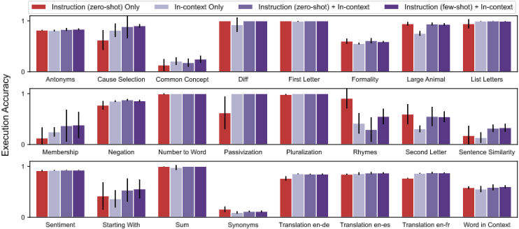
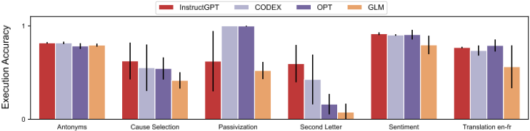
34
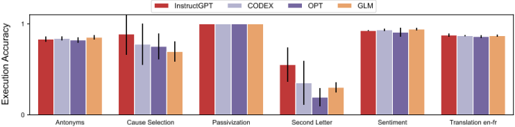
35
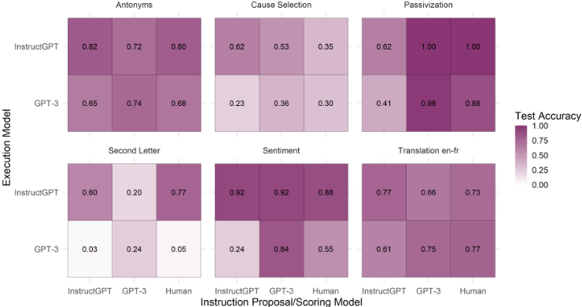
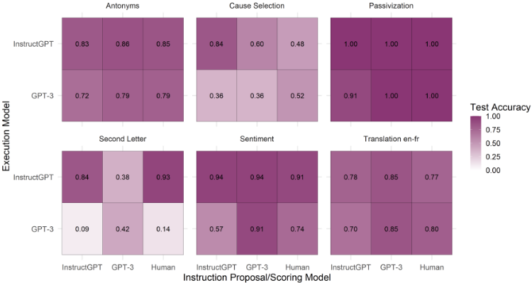
36
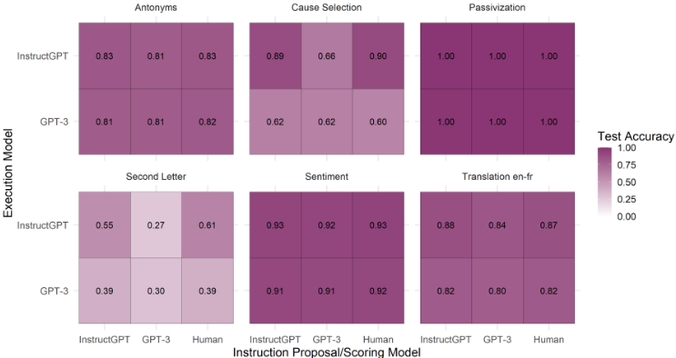
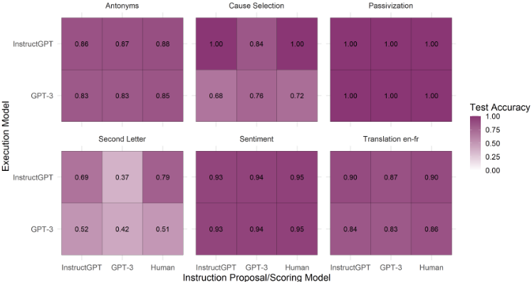
37
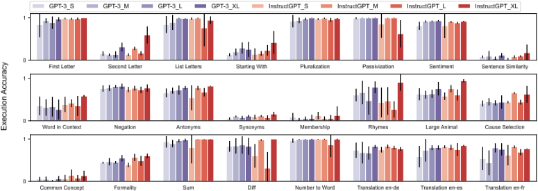
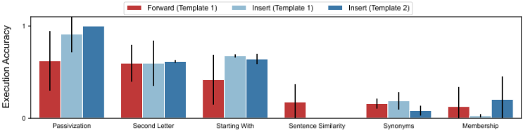
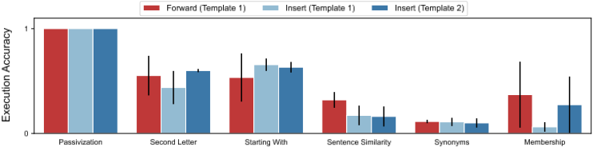
38
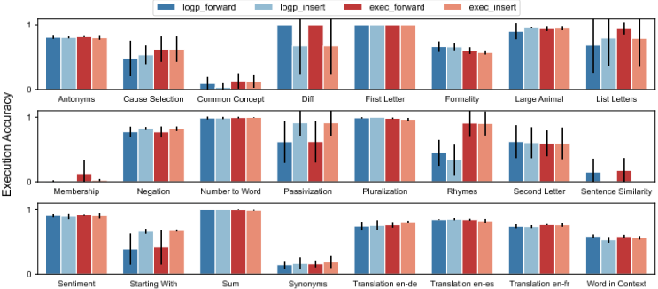
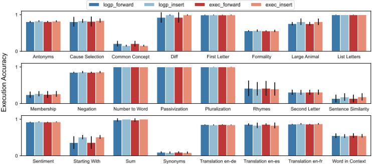
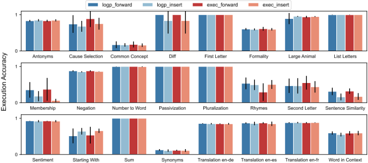
39
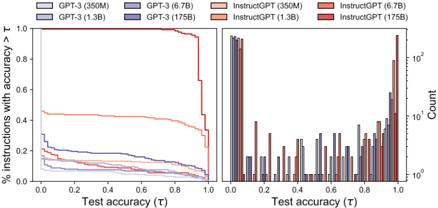
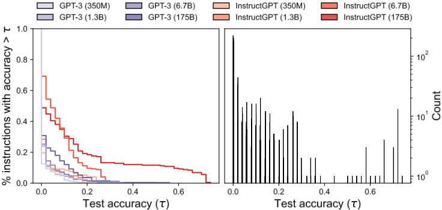
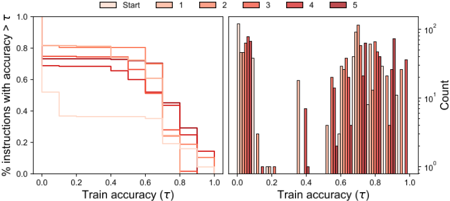
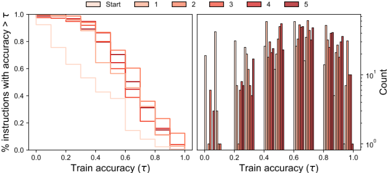
41
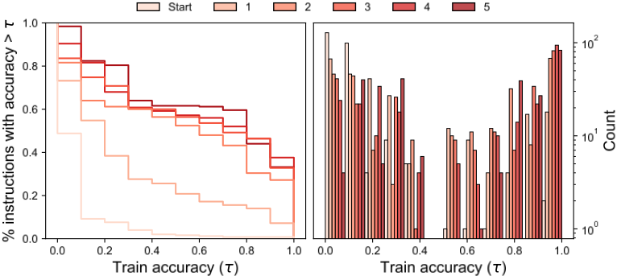
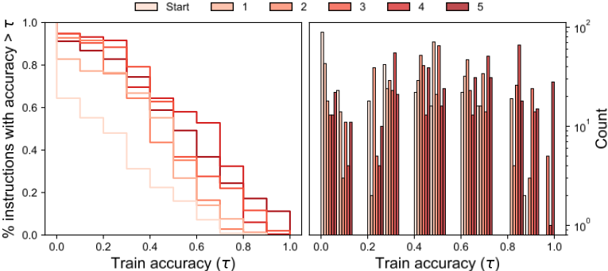
42
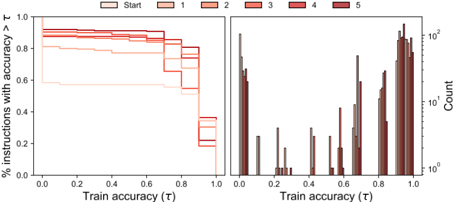
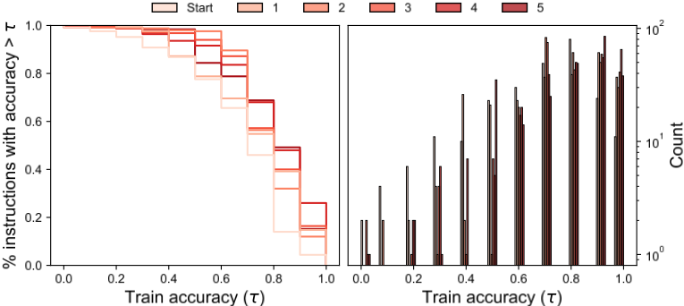
43
证据核查
1 条证据未在原文中核对到